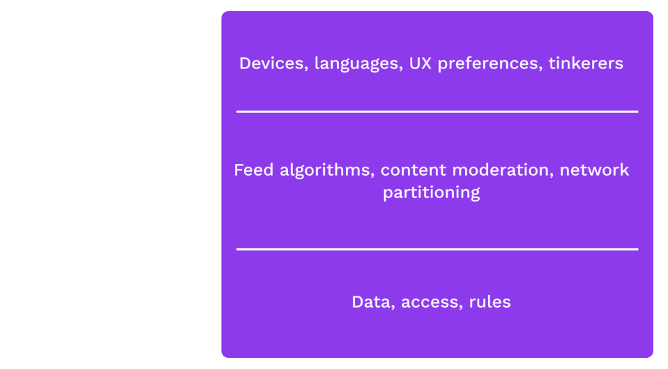
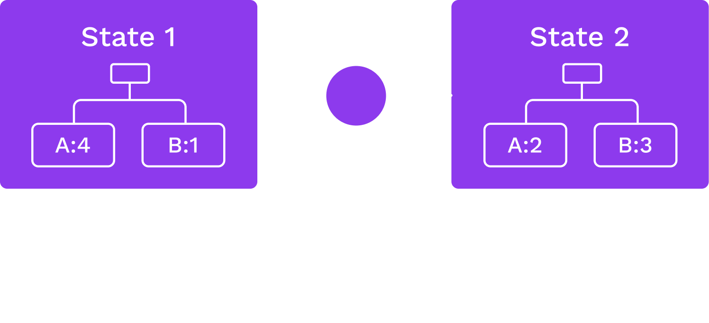
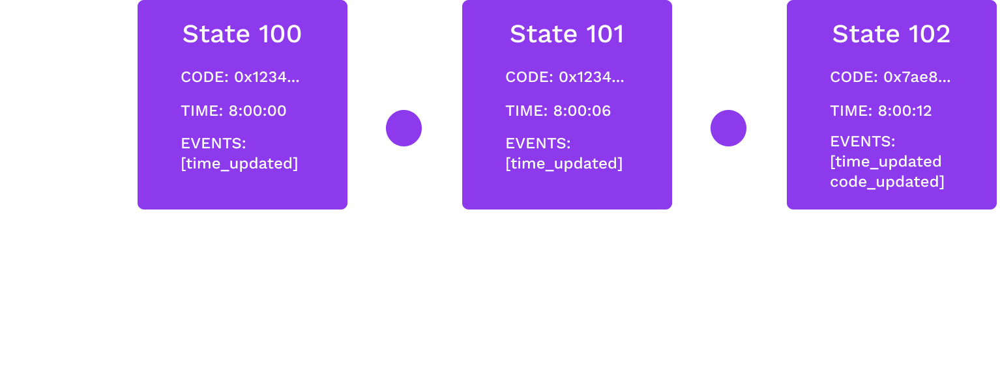
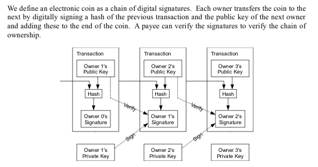

<!DOCTYPE html>
<html lang="en">
  <head>
    <meta charset="utf-8" />
    <meta name="viewport" content="width=device-width, initial-scale=1.0, maximum-scale=1.0, user-scalable=no" />

    <title>Overview of Blockchains</title>
    <link rel="shortcut icon" href="./../../../favicon.ico" />
    <link rel="stylesheet" href="./../../../dist/reset.css" />
    <link rel="stylesheet" href="./../../../dist/reveal.css" />
    <link rel="stylesheet" href="./../../../assets/styles/polkadot-theme.css" id="theme" />
    <link rel="stylesheet" href="./../../../css/highlight/shades-of-purple.css" />

    <link rel="stylesheet" href="./../../.././assets/styles/custom-classes.css" />
    <link rel="stylesheet" href="./../../.././assets/styles/polkadot-theme-base.css" />
    <link rel="stylesheet" href="./../../.././assets/styles/PBA-theme.css" />
    <link rel="stylesheet" href="./../../.././plugin/design-system/index.css" />

  </head>
  <body class="site">
    <header class="site-header">
      <a href="">
        
      </a>
      
    </header>
    <main class="site-reveal reveal">
      <article class="slides">
        <section  data-markdown><script type="text/template">

# Overview of Blockchains
</script></section><section  data-markdown><script type="text/template">
<widget-speaker name="Joe Petrowski" position="Common Good Parachains Team Lead at Web3 Foundation" image="../../../assets/img/0-Shared/people/joe.png" github=" joepetrowski" twitter="joepetrowski" linkedin="joe-petrowski-73538929" matrix="joe:web3.foundation"></widget-speaker>
</script></section><section  data-markdown><script type="text/template">
## Upholding Expectations

What is the core problem we want to solve?

<aside class="notes"><p>Potential for some discussion here, engage the audience.</p>
</aside></script></section><section  data-markdown><script type="text/template">
## Comparison with Cryptography

Cryptography provides strong guarantees about _messages_ without a trusted party, regardless of the conduit over which a message was transported.
</script></section><section  data-markdown><script type="text/template">
## Web 1

Users generally transmit information peer-to-peer.

Cryptography upholds its guarantees when used like this.
</script></section><section  data-markdown><script type="text/template">
## Web 2

"Send _us_ your information."

Platforms started offering digital services.

However, users must place faith in the service provider.
Any cryptographic guarantees are about interactions with the service provider, not peers.
</script></section><section  data-markdown><script type="text/template">
## Web3

A provision of digital services without the need to trust a service _provider_.
</script></section><section  data-markdown><script type="text/template">
## Desired Properties

### _Permissionless access_

Anyone should be able to access and interact with the system.
</script></section><section  data-markdown><script type="text/template">
## Desired Properties

### _Privacy_

Users should have credible expectations about what information they give up about themselves.
</script></section><section  data-markdown><script type="text/template">
## Desired Properties

### _Authenticity_

Users should have credible expectations about the messages they see, regardless of the platform the messages are on.
</script></section><section  data-markdown><script type="text/template">
## Desired Properties

### _Finality_

Users should be able to form credible expectations about when a state transition is final.
</script></section><section  data-markdown><script type="text/template">
## Desired Properties

### _Behavior_

The system should behave as expected, even if system operators do not.
</script></section><section  data-markdown><script type="text/template">
## Desired Properties

### _Unstoppability_

No individual actor, company, state, or coalition should be able to degrade any of these properties.
</script></section><section  data-markdown><script type="text/template">
## Trust

What is trust in this context? Blind faith.
</script></section><section  data-markdown><script type="text/template">
## Trust Example

Two users on Twitter:

- Trust that we are seeing information from the same database\*
- Trust that if a tweet is from X, then X wrote that tweet\*
- Trust that others see our messages as from us\*
- Trust that the messages we see are the messages the users wrote\*
- Trust that we're interacting with the application as equals

<aside class="notes"><ul>
<li>Cryptography actually provides a lot of these guarantees, but not when an intermediary has stepped in between users.</li>
<li>This is one example, but class should discuss.
Also possible activity.</li>
</ul>
</aside></script></section><section  data-markdown><script type="text/template">
## Digital Services

People rely on digital services every day.
They are inescapable (and valuable).

- Twitter, Instagram, Facebook, etc.
- Journalism and sources
- Banks
- Lawyers, notaries, regulators

<aside class="notes"><ul>
<li>Ask class for more examples</li>
</ul>
</aside></script></section><section  data-markdown><script type="text/template">
## Disintermediation

Removing trust allows us to unpackage applications.

When users have credible guarantees that they are interacting with the same data and logic, many applications can be built on the same system.
</script></section><section  data-markdown><script type="text/template">
## Application Disentanglement



<aside class="notes"><p>The idea here is to discuss how applications are often seen as an entire bundle: e.g.
Instagram is the database, the algorithms, the UX.
But when we have credible expectations that we&#39;re interacting with the same system, rules, data, it&#39;s possible to build lots of ways to access and interact with the system.
It also removes the need for a central authority to deal with all appeals/complaints from various users.</p>
</aside></script></section><section  data-markdown><script type="text/template">
## Desired Approach

Allow users to interact with a common system without trusting any intermediaries.

Opens the door to new application stacks:

- Shared state and state change rules
- Custom rendering, moderation, interfaces
</script></section><section  data-markdown><script type="text/template">
## State Machine


</script></section><section  data-markdown><script type="text/template">
# Blockchain, Finally
</script></section><section  data-markdown><script type="text/template">
## Just Kidding

Blockchains were not the first attempt at distributed state machines.

- Redundant systems in mission-critical engineering
- Data centers
- High availability applications
</script></section><section  data-markdown><script type="text/template">
## Constraints

However, most of these examples assume benevolent participants.
And an admin.

Blockchains are adversarial, with no admins.
</script></section><section  data-markdown><script type="text/template">
## Blockchains

<widget-columns>
<widget-column>

<center>

**Consensus**

How does the state advance?

Which changes are final?

</center>
</widget-column>
<widget-column>
<center>

**State Transition Function**

What does the state hold?

What are the _rules_ to change it?

</center>
</widget-column>
</widget-columns>
</script></section><section  data-markdown><script type="text/template">
## State Transition Function

A state transition function (STF) defines:

| Data Stored   | API & Behavior |
| :------------ | :------------- |
| Account Info  | Function calls |
| Balances      | Implementation |
| Authority Set | Responses      |
| Timestamp     |                |
| &c.           |                |
</script></section><section  data-markdown><script type="text/template">
## Example: A Simple Storage Item Write

```rust
/// The ideal number of staking participants.
#[pallet::storage]
#[pallet::getter(fn validator_count)]
pub type ValidatorCount<T> = StorageValue<_, u32, ValueQuery>;

/// Sets the ideal number of validators.
#[pallet::call]
impl<T: Config> Pallet<T> {
	pub fn set_validator_count(origin: OriginFor<T>, new: u32) -> DispatchResult {
		ensure_root(origin)?;
		ValidatorCount::<T>::put(new);
		Ok(())
	}
}
```

<aside class="notes"><p>This example is from Substrate, which we will cover more in depth in the next module.</p>
</aside></script></section><section  data-markdown><script type="text/template">
## Anatomy


</script></section><section  data-markdown><script type="text/template">
## Blocks

- Includes a header and a body.
- Header includes consensus-related info: number, parent hash, some digests.
- Body contains an ordered set of _extrinsics_: Packets from the outside world with _zero_ or more signatures attached.
</script></section><section  data-markdown><script type="text/template">
## Blocks in Substrate

```rust
/// Abstraction over a Substrate block.
pub struct Block<Header, Extrinsic: MaybeSerialize> {
	/// The block header.
	pub header: Header,
	/// The accompanying extrinsics.
	pub extrinsics: Vec<Extrinsic>,
}
```

<aside class="notes"><p>This example is also from Substrate, we will cover more in depth in the next module.</p>
</aside></script></section><section  data-markdown><script type="text/template">
## Headers

Consensus-related info. Varies per blockchain, but in Substrate:

- Parent hash
- Number
- State root
- Extrinsics root
- Digest

The parent hash links blocks together (cryptographically linked list). The other info is handy for other infrastructure and applications (more on that later).
</script></section><section  data-markdown><script type="text/template">
## Other Headers

<widget-columns>
<widget-column>

<center>

**Bitcoin**

</center>

- Version
- Previous Hash
- Tx Merkle Root
- Time
- N_Bits
- Nonce

</widget-column>
<widget-column>

<center>

**Ethereum**

</center>

- Time
- Block NUmber
- Base Fee
- Difficulty
- Mix Hash
- Parent Hash
- State Root
- Nonce

</widget-column>
</widget-columns>
</script></section><section  data-markdown><script type="text/template">
## Extrinsics

Packets from the outside world with _zero_ or more signatures attached.

- Function calls to the STF
- Some functions require signatures (e.g., transfer some tokens)
- Others don't, but usually have some validation means
</script></section><section  data-markdown><script type="text/template">
### Consensus

Whole next lecture is dedicated to consensus, going to stay strictly conceptual here.
</script></section><section  data-markdown><script type="text/template">
## Liveness

- Property that ensures state transitions will happen.
  The system should be _available_.
- Someone needs to propose a state transition (within a block) and a resultant state.
- Motivation for actors to do so?

<aside class="notes"><p>Class Discussion: What are some motivations?</p>
</aside></script></section><section  data-markdown><script type="text/template">
## Liveness Examples

- Static leader
- Round robin
- Proof of Work
- Random assignment protocols
</script></section><section  data-markdown><script type="text/template">
## Safety

Once a state transition occurs, under what conditions can users have a credible expectation that it will never revert?

- Probabilistic
- Deterministic
</script></section><section  data-markdown><script type="text/template">
## Safety Examples

- Longest chain
- Most difficulty
- Practical Byzantine Fault Tolerance (PBFT) (per state transition)
- PBFT (on batches)
</script></section><section  data-markdown><script type="text/template">
## Deterministic Finality

What does is mean when a final block is reverted?
</script></section><section  data-markdown><script type="text/template">
## View

No node has an omniscient view of the network.
Therefore, one node may always have more information than another node.

But they should never believe an incongruity.

Example: I believe that block $B$ is final.
You may not see $B$ as final _yet_, but you should never believe that a chain that excludes $B$ is final.
</script></section><section  data-markdown><script type="text/template">
## Security

What actually backs up the system's guarantees?

- Lazy: Omnipotence (AWS, Twitter, Bank)
- Some "proof" of authority, as defined within the system itself
  - Wasting energy (trivial)
  - Putting stake at risk
  - Being elected by participants via their willingness to put their own stake at risk
</script></section><section  data-markdown><script type="text/template">
## Punishment

If some of the authorities in a system fail to uphold their guarantees, the system should have a way to hold them accountable.

In blockchains, this is usually accomplished via either lack of reward or explicit seizure/destruction.
</script></section><section  data-markdown><script type="text/template">
## Unscrupulous Actors

**The _system_ should uphold its credibility even if individual participants do not.**

| Technical Design               | Economic Design    |
| ------------------------------ | ------------------ |
| Key choices                    | Cost of misuse     |
| Public API                     | Fees & Deposits    |
| Hash choices                   | Slashing & Rewards |
| Stored data                    |                    |
| Transactional/Autonomous Logic |                    |
| Authorship & Censorship        |                    |
</script></section><section  data-markdown><script type="text/template">
## STF Upgrades

All systems need to upgrade to stay relevant.

Bug fixes, new functionality, new information.

This can be tricky in blockchains...

<aside class="notes"><p>We&#39;ll be getting to this soon and also in 3.4.</p>
</aside></script></section><section  data-markdown><script type="text/template">
# Short History Lesson
</script></section><section  data-markdown><script type="text/template">
## Bitcoin



Uses an unspent transaction output (UTXO) model & Proof of Work (PoW) consensus.

<aside class="notes"><p>Source: <a href="https://bitcoin.org/en/bitcoin-paper">Bitcoin white paper</a></p>
</aside></script></section><section  data-markdown><script type="text/template">
## Ethereum

- Generalisation of Bitcoin: provides a quasi-Turing-complete VM
- Uses an account-based system
- Accounts can store balances, but can also store executable code (smart contracts)
- Each contract can have its own internal state and API
</script></section><section  data-markdown><script type="text/template">
## Proof of Stake

Ethereum uses Proof of Work, but planned\* to transition to Proof of Stake.

Many new protocols came out in the coming years with suggested implementations of PoS (NXT, Ouroboros).

Covered more in depth in the next lecture.
</script></section><section  data-markdown><script type="text/template">
## Hard Forks

Historically, upgrading blockchains meant getting everyone to update their node software.

"This had made many people very angry and has been widely regarded as a bad move."
</script></section><section  data-markdown><script type="text/template">


<aside class="notes"><p>Wrap up with some notes about Polkadot</p>
</aside></script></section><section  data-markdown><script type="text/template">
## Consensus Over the STF

Who actually defines the STF?

In Substrate chains (like Polkadot), it's part of the state itself!

`:CODE => <some-wasm-executable>`
</script></section><section  data-markdown><script type="text/template">
## Many State Machines

- If one state machine with such guarantees is useful, people will probably want more.
- But security can be diluted.
- Polkadot is designed to _host_ a large number of sovereign state machines.
  We call them parachains.
</script></section><section  data-markdown><script type="text/template">
## Specialisation

Different state machines will specialise in different things (assets, privacy, credentials, social media).

But applications will want to pull from many of these capabilities.

So these state machines should have a messaging protocol to interact with each other.
</script></section><section  data-markdown><script type="text/template">
## Substrate

Practically, these parachains will have a lot in common:

- Similar needs for accounting units, databases, RPCs, etc.
- All need to "speak the same language", i.e. compile to Wasm

Substrate was created to make this part easy.
</script></section><section  data-markdown><script type="text/template"></script></section>
      </article>
    </main>

    <script src="./../../../dist/reveal.js"></script>
    <script src="./../../../plugin/markdown/markdown.js"></script>
    <script src="./../../../plugin/highlight/highlight.js"></script>
    <script src="./../../../plugin/zoom/zoom.js"></script>
    <script src="./../../../plugin/notes/notes.js"></script>
    <script src="./../../../plugin/math/math.js"></script>

    <script type="module">
      import DesignSystem from "./../../../plugin/design-system/design-system.js"

      function extend() {
        var target = {};
        for (var i = 0; i < arguments.length; i++) {
          var source = arguments[i];
          for (var key in source) {
            if (source.hasOwnProperty(key)) {
              target[key] = source[key];
            }
          }
        }
        return target;
      }

      // default options to init reveal.js
      var defaultOptions = {
        controls: true,
        progress: true,
        history: true,
        center: true,
        transition: 'default', // none/fade/slide/convex/concave/zoom
        plugins: [
          RevealMarkdown,
          RevealHighlight,
          RevealZoom,
          RevealNotes,
          RevealMath,
          DesignSystem
        ]
      };

      // options from URL query string
      const queryOptions = Reveal().getQueryHash() || {};

      const options = extend(defaultOptions, {"width":1400,"height":900,"margin":0,"minScale":0.2,"maxScale":2,"transition":"none","controls":true,"progress":true,"center":true,"slideNumber":true,"backgroundTransition":"fade"}, queryOptions);
      options.baseUrl = '';
      Reveal.initialize(options);
    </script>
  </body>
</html>
